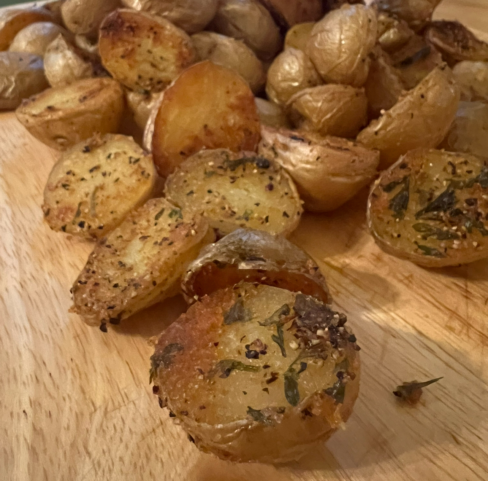

Oven Roasted Baby Potatoes

Description
Oven roasted baby potatoes that make the perfect side dish to any meal.
The crisp texture combined with flavors from garlic powder, pepper steak, and additional seasonings will leave you craving another bite.
Ingredients
- 1 1/2 pounds small baby potatoes, Yukon gold
- 3 tablespoons olive oil
- 1 teaspoon garlic powder
- 1 teaspoon onion powder
- 1 teaspoon Pepper Steak seasoning
- 1 teaspoon parsley flakes
- 1/2 teaspoon salt, plus more for topping
- olive oil spray
Steps
- Preheat the oven to 400F and set the rack for the center of the oven. Cut the potatoes in half.
- Drizzle the olive oil on the bottom of the sheet pan, spreading out to evenly cover the bottom.
- Evenly sprinkle the oil with the garlic powder, onion powder, Pepper Steak seasoning, parsley flakes, and salt.
- Place the potatoes over the seasoning, cut side down in an even layer. Spritz the tops of the potatoes with olive oil spray and season the tops with a pinch more salt.
- Bake in the center of the oven, 30 to 40 minutes, depending on the size of the potatoes, until the bottoms are golden and the potatoes are tender when pierced with a knife.
Source
Recipe inspired by Skinny Taste.